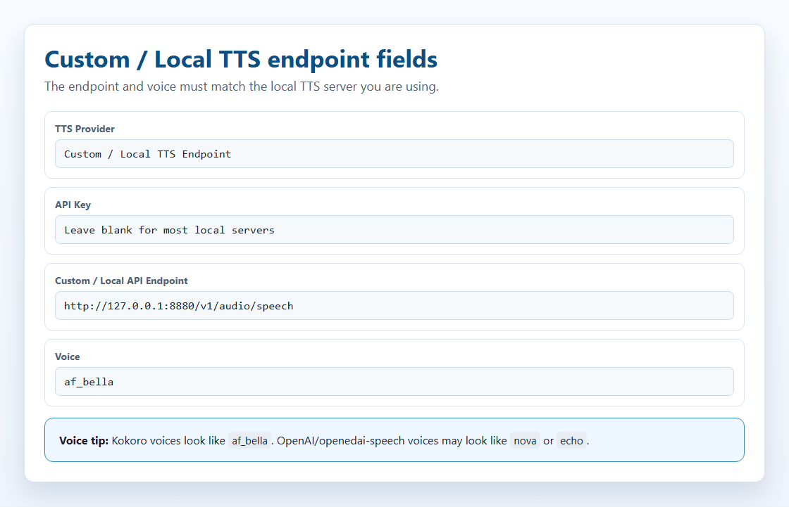
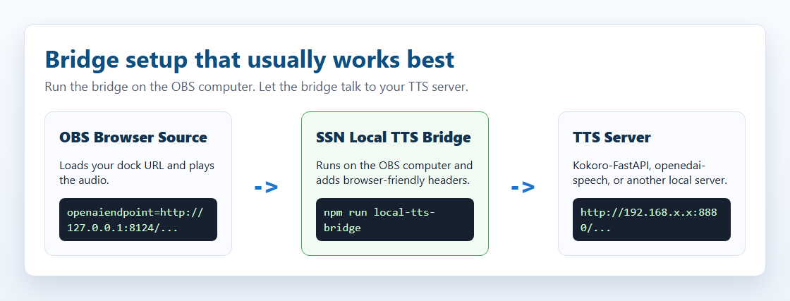
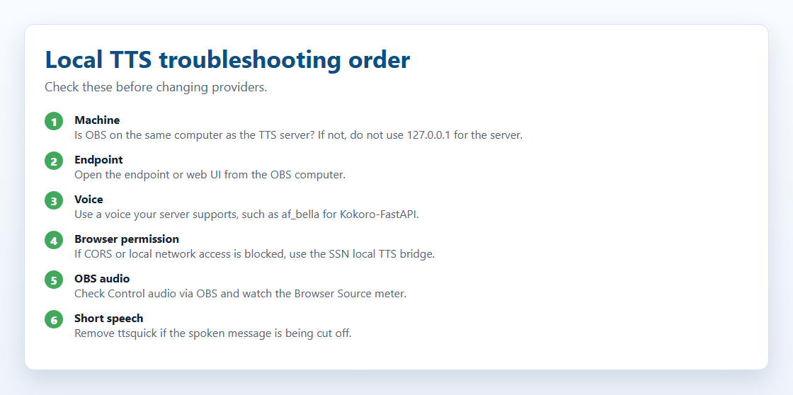

نظرة عامة
يمكن لـSocial Stream Ninja قراءة رسائل الدردشة بصوت مسموع باستخدام تحويل النص إلى كلام بالذكاء الاصطناعي المحلي. قد تعني «محلي» أحد أمرين: تشغيل الصوت داخل المتصفح، أو تشغيل خادم صغير لتحويل النص إلى كلام على جهازك.
هناك طريقتان:
المسار 1 — تحويل النص إلى كلام المدمج دون إعداد
تتوفر عدة أصوات ذكاء اصطناعي عالية الجودة مدمجة مباشرة في Social Stream Ninja. تعمل في متصفحك باستخدام WebAssembly أو ONNX — دون خادم أو Docker أو تثبيت.
- Kokoro 82M (أفضل جودة)
- Piper Neural TTS
- Kitten TTS
- eSpeak-NG
ما عليك سوى إضافة معامل URL والبدء.
المسار 2 — خادم مستضاف ذاتيًا Docker مطلوب
شغّل خادمًا محليًا لتحويل النص إلى كلام على جهازك ووجّه Social Stream Ninja إليه. يتيح لك أصواتًا أكثر واستنساخ الصوت والتحكم من جانب الخادم.
- Kokoro-FastAPI
- openedai-speech (Piper)
- kokoro-web
يستخدم دعم Social Stream المدمج لـ نقطة نهاية متوافقة مع OpenAI .
إعداد سريع
هذا أقصر مسار لمعظم مقدمي البث:
&speech=en-US&ttsprovider=kokoro أو &speech=en-US&ttsprovider=kitten إلى dock.html .Testing local TTS. انتظر تنزيلات النماذج الأولى عند استخدام Kokoro أو Piper.قاعدة localhost / 127.0.0.1
هذا أكثر خطأ شائع في تحويل النص إلى كلام المحلي.
localhost و 127.0.0.1 يعنيان دائمًا «هذا الجهاز نفسه». إذا كان OBS على جهاز وKokoro على جهاز آخر، فإن 127.0.0.1 داخل عنوان URL الخاص بـOBS يشير إلى جهاز OBS، وليس جهاز Kokoro.

127.0.0.1 فقط عندما يكون خادم تحويل النص إلى كلام على الجهاز نفسه الذي يشغّل صفحة الصوت. إذا كان الخادم على جهاز آخر، فاستخدم عنوان LAN لذلك الجهاز.| إعدادك | نقطة النهاية المطلوب استخدامها |
|---|---|
| OBS وKokoro يعملان على الجهاز نفسه | http://127.0.0.1:8880/v1/audio/speech |
| Kokoro يعمل على جهاز آخر في شبكتك المنزلية | http://192.168.x.x:8880/v1/audio/speech، باستخدام عنوان LAN الخاص بجهاز Kokoro |
| يعمل زر الاختبار في تطبيق سطح المكتب SSN، لكن OBS صامت | يظل OBS بحاجة إلى نقطة نهاية عاملة خاصة به. نجاح اختبار التطبيق لا يثبت أن OBS يستطيع الوصول إلى الخادم. |
على Linux وmacOS وWindows، تأكد أيضًا من أن جدار الحماية يسمح بالمنفذ وأن Docker نشره باستخدام -p 8880:8880.
أين تنقر في SSN
في النافذة المنبثقة للإضافة، افتح محدد مزود تحويل النص إلى كلام واختر نقطة نهاية مخصصة أو محلية لتحويل النص إلى كلام. يعرض ذلك حقول نقطة النهاية المحلية المتوافقة مع OpenAI والرابط المؤدي إلى هذا الدليل.

تدفق الاستضافة الذاتية
يتعامل SSN مع خادم تحويل النص إلى كلام المحلي أو المستضاف ذاتيًا كنقطة نهاية كلام متوافقة مع OpenAI. التدفق الأساسي هو:
بنية الطلب
بالنسبة إلى ttsprovider=customtts, localtts، أو openai، يرسل SSN طلب JSON POST إلى نقطة النهاية المُهيَّأة:
CORS والصفحات المستضافة والجسر
CORS هو فحص أذونات يجريه المتصفح. ببساطة: يجب أن يخبر خادم تحويل النص إلى كلام المتصفح بأن «نعم، يُسمح لهذه الصفحة بطلب الصوت مني». إذا غاب هذا الإذن، فقد يُحظر الطلب قبل أن يراه Kokoro أو أي خادم تحويل نص إلى كلام آخر.
- إذا حمّلت
dock.htmlفي Chrome أو OBS، فقد يكون لـCORS تأثير. - إذا حمّلت صفحة مستضافة مثل
https://beta.socialstream.ninja/dock.html، فقد يحظر Chrome أيضًا الاستدعاءات إلى عناوين HTTP المحلية أو الخاصة. - إذا نجح زر الاختبار داخل تطبيق SSN لكن مصدر المتصفح في OBS صامت، فاختبر OBS بصورة منفصلة. لدى OBS متصفحه الخاص.
إذا لم يسمح الخادم بطلبات المتصفح، فشغّل جسر SSN المحلي لتحويل النص إلى كلام ووجّه SSN إلى http://127.0.0.1:8124/v1/audio/speech. مع OBS، أسهل إعداد هو تشغيل الجسر على الجهاز نفسه الذي يشغّل OBS.
استجابات الصوت المدعومة
| الاستجابة | دعم SSN | ملاحظات |
|---|---|---|
| صوت ثنائي | نعم | أفضل خيار. أعِد audio/mpeg, audio/wav, audio/ogg, audio/aac، أو نوع صوت آخر يمكن للمتصفح تشغيله. |
| JSON مع رابط صوت | نعم | يفحص SSN url, audio_url, output_url، والقيمة المتداخلة data.url، وأول data[] . |
| JSON مع صوت بترميز base64 | نعم | يفحص SSN audio, audio_data, audioContent, b64_json، والقيمة المتداخلة data ، وعناوين URL للبيانات. |
| PCM خام | فقط عند استخدام غلاف | أعِد PCM كملف WAV أو WAV بترميز base64. لا يمكن لعنصر الصوت في المتصفح تشغيل بايتات PCM الخام مباشرة بصورة موثوقة. |
mp3 للملفات الصغيرة ودعم المتصفحات الواسع، و wav لخوادم الاستنساخ المحلية واختبار الجسر، و opus فقط عندما يدعمه الخادم والمتصفح كلاهما.
الصوت المتدفق
لا ينفذ SSN حاليًا تشغيلًا تدريجيًا لنقاط نهاية تحويل النص إلى كلام المخصصة أو المحلية. ينتظر كتلة الاستجابة أو حمولة الصوت في JSON، ثم يشغّلها. تتيح بعض الخوادم نقاط نهاية متدفقة، لكن المسار الحالي المتوافق مع OpenAI في SSN يُخزّن الصوت قبل تشغيله.
النتيجة العملية: اجعل مقاطع قراءة الدردشة قصيرة. يحتاج دعم التدفق إلى مسار تشغيل منفصل يستخدم مقاطع WAV/MP3 متدفقة أو MediaSource أو WebCodecs أو مازجًا على الخادم.
المسار 1 — تحويل النص إلى كلام المدمج (دون إعداد)
هذه المحركات مضمّنة داخل Social Stream Ninja ولا تحتاج إلى تثبيت. تعمل في المتصفح باستخدام WebAssembly (WASM) أو ONNX Runtime.
| المزود | الجودة | استخدام CPU | GPU/WebGPU | معامل URL |
|---|---|---|---|---|
| Kokoro TTS | ⭐⭐⭐⭐⭐ ممتاز | متوسط | أسرع باستخدام GPU | ?ttsprovider=kokoro |
| Piper TTS | ⭐⭐⭐⭐ جيد جدًا | منخفض | CPU فقط | ?ttsprovider=piper |
| Kitten TTS | ⭐⭐⭐ جيد | منخفض جدًا | CPU فقط | ?ttsprovider=kitten |
| eSpeak-NG | ⭐⭐ آلي | ضئيل | CPU فقط | ?ttsprovider=espeak |
كيفية التفعيل
أضف &ttsprovider= و &speech= إلى Social Stream الخاص بك dock.html عنوان URL:
خيارات Kokoro TTS
يوفر SSN حاليًا 28 صوتًا إنجليزيًا وثلاثة أصوات إسبانية وثلاثة أصوات بالبرتغالية البرازيلية من Kokoro. حدد أحدها باستخدام &voicekokoro=:
مثال بالإسبانية:
مثال بالبرتغالية:
خيارات Piper TTS
حدد نموذج صوت باستخدام &pipervoice=:
تتوفر أصوات Piper بالبرتغالية والإسبانية:
خيارات Kitten TTS
خيارات eSpeak-NG
ملاحظات المتصفح وتطبيق سطح المكتب
تستخدم إضافة Chrome ومصدر المتصفح في OBS وتطبيق سطح المكتب المستقل Social Stream Ninja جميعها dock.html معاملات URL لتحويل النص إلى كلام نفسها. الفرق المهم هو مكان إنتاج الصوت.
| بيئة التشغيل | سلوك تحويل النص إلى كلام المحلي | التقاط الصوت |
|---|---|---|
| إضافة Chrome / مصدر متصفح OBS | تتطلب طلبات fetch من المتصفح دعم CORS من الخادم المحلي، ما لم تستخدم جسر SSN. | استخدم مصدر متصفح OBS مع «Control audio via OBS». |
| تطبيق سطح المكتب المستقل | يستخدم إعدادات المزود نفسها. نوافذ الملفات المحلية في التطبيق أقل تقيدًا بـCORS، لكن الجسر يظل المسار الأكثر موثوقية للخوادم التي ترفض طلبات المتصفح. | التقط صوت سطح المكتب أو التطبيق، أو وجّه التطبيق إلى كابل صوت افتراضي. |
| Kokoro المدمج في تطبيق سطح المكتب | يمكن للتطبيق استخدام مسار ninjafy.tts المحلي لـKokoro بدلًا من الاعتماد فقط على تحميل النموذج في المتصفح. |
يصدر الصوت من التطبيق، لذا استخدم التقاط صوت سطح المكتب أو التطبيق. |
dock.html إلى OBS، فإن OBS هو الذي يجب أن يصل إلى خادم تحويل النص إلى كلام ويشغّل الصوت.
المسار 2 — خادم تحويل النص إلى كلام مستضاف ذاتيًا
إذا أردت خيارات أصوات أكثر أو استنساخ الصوت أو خادمًا مخصصًا تعيد استخدامه عبر الأدوات، فيمكنك تشغيل خادم محلي لتحويل النص إلى كلام. يتصل به Social Stream Ninja باستخدام نقطة نهاية لتحويل النص إلى كلام متوافقة مع OpenAI — لا يلزم مفتاح API للخوادم المحلية.
ثلاثة خيارات موصى بها:
| الخادم | النموذج | GPU | القرص | المنفذ الافتراضي |
|---|---|---|---|---|
| Kokoro-FastAPI موصى به | Kokoro 82M | اختياري | ~2 GB | 8880 |
| openedai-speech (Piper) خفيف | Piper TTS | CPU فقط | <1 GB | 8000 |
| kokoro-web | Kokoro 82M | اختياري | ~2 GB | 3000 |
أي حزمة تناسبك؟
| الحزمة | أبرز فائدة | المقابل |
|---|---|---|
| Kokoro المدمج | أفضل خيار أول: دون خادم، وجودة عالية، وخصوصية، ويعمل في المتصفح وتطبيق سطح المكتب. | دون استنساخ أصوات. |
| Kokoro-FastAPI | خادم متوافق مع OpenAI، وإعداد Docker سهل، وCPU أو GPU، وأصوات Kokoro عديدة. | لا يوفر استنساخًا حقيقيًا للصوت؛ يعتمد مزج الأصوات وميزات الصوت المخصص على نسخة الخادم. |
| openedai-speech | نقطة نهاية خفيفة متوافقة مع OpenAI؛ يناسب Piper معالج CPU، ويضيف XTTS استنساخ الصوت مع استهداف نحو 4 GB من VRAM. | يذكر المستودع أنه أصبح متقادمًا إلى حد كبير، لذا اعتبره مفيدًا دون ضمان ملاءمته للمستقبل. |
| خوادم Chatterbox | استنساخ الصوت وخيارات واجهة ويب وواجهات API متوافقة مع OpenAI وأدوات للنصوص الطويلة. | دعم CUDA/GPU أسلس من CPU في بعض النسخ؛ يختلف الإعداد باختلاف تفرع الخادم. |
| GPT-SoVITS | استنساخ وتحكم قويان مع مراجع قصيرة ودعم النص المرجعي. | غير متوافق مع OpenAI افتراضيًا؛ استخدم وضع جسر SSN. |
| F5-TTS | استنساخ طبيعي دون تدريب مسبق على المتحدث باستخدام WAV توجيهي ونصه. | المشروع الرسمي ليس نقطة نهاية OpenAI بسيطة؛ استخدم غلافًا أو وضع الجسر. |
| Qwen3-TTS | ميزات حديثة لاستنساخ الصوت وتصميمه، بما فيها نماذج أصغر بحجم 0.6B/1.7B. | يعطي الأولوية للمكتبة والعرض التجريبي؛ يحتاج إلى غلاف لـSSN. |
| MisoTTS | توليد كلام متقدم من توجيهات. | ليس هدفًا محليًا مناسبًا لـ6 GB من VRAM؛ استخدم استضافة بعيدة أو مخصصة عند الحاجة. |
كيف يعمل استنساخ الصوت
استنساخ الصوت ليس وضعًا منفصلًا في SSN. بل هو ميزة داخل بعض خوادم تحويل النص إلى كلام المحلية. يرسل SSN نص الدردشة إلى نقطة نهاية محلية؛ ويختار الخادم الصوت المستنسخ من ملف صوت مرجعي محفوظ أو ملف صوت للمتحدث أو إعداد الجسر.
التدفق المعتاد
- سجّل مقطعًا مرجعيًا واضحًا، عادةً بين 3 و30 ثانية لمتحدث واحد مع ضوضاء خلفية قليلة.
- تتطلب بعض المحركات أيضًا النص الدقيق لذلك المقطع المرجعي.
- يحوّل الخادم المحلي المرجع إلى توجيه متحدث أو تمثيل متجهي أو ملف صوتي للمتحدث.
- يرسل SSN نص الدردشة المباشرة إلى نقطة النهاية باستخدام
ttsprovider=customtts. - يعيد الخادم ملف صوت قابلًا للتشغيل، عادةً WAV أو MP3، ويشغّله SSN في لوحة الإرساء أو مصدر المتصفح.
مع 6 GB من VRAM أو أقل، ابدأ بنماذج استنساخ الصوت الصغيرة دون تدريب مسبق على المتحدث والخوادم المتوافقة مع OpenAI. يمكن أن تعمل النماذج الأكبر عبر نقطة نهاية SSN نفسها إذا استضافها المستخدم في مكان آخر.
| الخيار | استنساخ الصوت | يعمل ضمن 6 GB من VRAM | مسار API لـSSN |
|---|---|---|---|
| Qwen3-TTS 0.6B Base | صوت مرجعي مدته 3 ثوانٍ | على الأرجح | استخدم غلافًا متوافقًا مع OpenAI، ثم ttsprovider=customtts |
| XTTS-v2 / openedai-speech | أصوات مرجعية من مقاطع WAV قصيرة | نعم، نحو 4 GB بحسب openedai-speech | /v1/audio/speech |
| Chatterbox Turbo / Server | استنساخ باستخدام صوت مرجعي | على الأرجح عند استخدام Turbo أو مقاطع صغيرة | نسخ خوادم متوافقة مع OpenAI، أو الجسر |
| GPT-SoVITS | 5 ثوانٍ لوضع zero-shot، ودقيقة لوضع few-shot | على الأرجح مع fp16 أو تثبيت خفيف | استخدم scripts/local-tts-bridge.cjs --mode gptsovits |
| F5-TTS | WAV توجيهي + نصه | ربما؛ يعتمد على النسخة ومولّد الموجة الصوتية | استخدم غلافًا متوافقًا مع OpenAI، أو --mode f5 لأغلفة خادم F5-TTS |
| MisoTTS 8B | سياق صوتي توجيهي | لا؛ يوصي المشروع بـ24 GB من VRAM | نقطة نهاية بعيدة أو مخصصة فقط |
POST /v1/audio/speech مع { model, input, voice, response_format, speed } وتعيد ملف صوت قابلًا للتشغيل. يشمل ذلك OpenAI وCoqui/XTTS وأغلفة Kokoro وأغلفة Qwen ومعظم خدمات الوكيل.
متطلبات الكمبيوتر
هذه نقاط بداية عملية وليست ضمانات قاطعة. يمكن لإصدار النموذج والتكميم وطول النص وصورة Docker والتطبيقات الخلفية أن تغير استخدام الذاكرة.
| الخيار | الحد الأدنى العملي لمواصفات الكمبيوتر | هدف مناسب | ملاحظات |
|---|---|---|---|
| تحويل النص إلى كلام في النظام / eSpeak | أي جهاز PC حديث | أي جهاز PC | سريع، منخفض الجودة، دون استنساخ أصوات. |
| Kitten المدمج | CPU منخفض المواصفات، و4 GB من RAM | CPU لحاسوب محمول حديث، و8 GB من RAM | نموذج ONNX صغير، وبدء تشغيل سريع. |
| Piper المدمج | CPU حديث، و4-8 GB من RAM | CPU حديث، و8 GB من RAM | خيار جيد لصوت عصبي قليل المتطلبات. |
| Kokoro المدمج | CPU حديث، و8 GB من RAM | GPU يدعم WebGPU أو CPU سريع، و8-16 GB من RAM | أفضل جودة دون إعداد. ينزّل التحميل الأول ملفات النموذج. |
| Kokoro-FastAPI | مضيف Docker يستخدم CPU، و8 GB من RAM | GPU اختياري من NVIDIA، و8-16 GB من RAM | خادم محلي جيد عندما لا يكون تحميل النموذج داخل المتصفح مناسبًا. |
| openedai-speech Piper | CPU، و4-8 GB من RAM | CPU، و8 GB من RAM | خادم خفيف متوافق مع OpenAI. |
| openedai-speech XTTS | GPU من NVIDIA بنحو 4 GB من VRAM، و8-16 GB من RAM | GPU من NVIDIA بذاكرة 6 GB+، و16 GB من RAM | مسار استنساخ الصوت؛ يمكن استخدام CPU لكنه بطيء. |
| خوادم Chatterbox | قد تعمل بعض النسخ على CPU، لكنها بطيئة | GPU من NVIDIA بذاكرة 6 GB+، و16 GB من RAM | استخدم GPU عند استنساخ الصوت أو معالجة نص طويل. |
| GPT-SoVITS / F5-TTS / Qwen3-TTS | للاختبار على CPU فقط، بطيء | GPU من NVIDIA بذاكرة 6 GB+ للنماذج الأصغر أو المحسنة، و16 GB من RAM | اختيار الغلاف وحجم النموذج مهمان. توقع إعدادًا أكثر. |
| MisoTTS 8B | غير موصى به محليًا مع 6 GB من VRAM | 24 GB من VRAM أو مضيف بعيد | يوصي المستودع ببطاقات GPU ذات VRAM كبيرة للاستخدام التفاعلي. |
ملاحظات الخوادم المختبرة
هذه أهداف استنساخ الصوت المستضافة ذاتيًا التي جرى فحص توافقها مع SSN. اختُبر مسار نقطة النهاية المحلية مع كل من dock.html و featured.html.
يقبل SSN استجابات صوت ثنائي مباشرة، واستجابات JSON تحتوي على صوت بترميز base64، واستجابات JSON تحتوي على رابط صوت. يُخزّن التشغيل المخصص أو المحلي الحالي الصوت المُعاد قبل تشغيله؛ لا يُدعَم التشغيل التدريجي المتدفق بعد.
| الخادم | مسار SSN | ملاحظات |
|---|---|---|
| openedai-speech | مباشرة أو عبر الجسر | متوافق مع OpenAI /v1/audio/speech. اختُبر وضع Piper بتوليد صوت فعلي على CPU من dock.html و featured.html، مباشرة وعبر الجسر. إذا كنت تشغّل من المصدر على Windows، فتأكد من أن مجلد البيئة الافتراضية Scripts مدرج في PATH بحيث piper.exe و ffmpeg.exe يمكن العثور عليهما. |
| chatterbox-tts-api | مباشرة أو عبر الجسر | متوافق مع OpenAI /v1/audio/speech. يستخدم الصوت المرجعي المُهيَّأ لاستنساخ الصوت. اختُبرت بنية API مباشرة وعبر الجسر. |
| Chatterbox-TTS-Server | مباشرة أو عبر الجسر | نقطة نهاية متوافقة مع OpenAI وواجهة ويب. اختُبرت بتوليد صوت فعلي على CPU باستخدام Emily.wav من dock.html و featured.html، مباشرة وعبر الجسر. |
| GPT-SoVITS | وضع الجسر | شغّل جسر SSN باستخدام --mode gptsovits؛ الخادم المستهدف هو /tts، وليس متوافقًا مع OpenAI. |
| F5-TTS_server | وضع الجسر | شغّل جسر SSN باستخدام --mode f5؛ يستخدم الخادم المستهدف GET /synthesize_speech/. |
| F5-TTS الرسمي | يحتاج إلى غلاف | يعطي الأولوية لـCLI وGradio وخادم المقبس. استخدم غلافًا متوافقًا مع OpenAI أو وضع جسر F5 مع غلاف. |
| Qwen3-TTS | يحتاج إلى غلاف | يعطي الأولوية للمكتبة وعرض Gradio التجريبي. مرشح جيد لغلاف صغير متوافق مع OpenAI حول generate_voice_clone. |
| MisoTTS | بعيد أو مخصص فقط | استنساخ الصوت مدعوم، لكن نموذج 8B غير مناسب لـ6 GB من VRAM ولا توجد له نقطة نهاية REST محلية في المستودع. |
إعداد Kokoro-FastAPI
Kokoro-FastAPI يشغّل نموذج Kokoro 82M كخادم محلي مع API متوافق مع OpenAI. يعمل على CPU (دون الحاجة إلى GPU) ويقدم جودة صوت ممتازة.
التثبيت باستخدام Docker
افتح طرفية (Command Prompt أو PowerShell أو Terminal) ونفّذ أحد الأوامر التالية:
CPU (يعمل على أي جهاز كمبيوتر):
GPU (NVIDIA فقط — توليد أسرع):
التحقق من أنه يعمل
افتح المتصفح وانتقل إلى http://localhost:8880/web/— يجب أن تظهر واجهة ويب يمكنك فيها اختبار الأصوات.
الأصوات المتاحة
يتوفر أكثر من 67 صوتًا. بعض الأمثلة البارزة:
تصفح جميع الأصوات واختبرها في http://localhost:8880/web/ بعد تشغيل الخادم.
عنوان URL الخاص بـSSN
إذا كان Kokoro-FastAPI على الجهاز نفسه الذي يشغّل OBS:
إذا كان Kokoro-FastAPI على جهاز آخر، فاستبدل 192.168.x.x بعنوان LAN لذلك الجهاز:
af_bella, af_sarah, am_adam، أو bf_emma. أسماء مثل echo, nova، و alloy هي أسماء بأسلوب OpenAI/openedai-speech وقد لا تعمل مع Kokoro.
إبقاء الخادم قيد التشغيل
لإبقاء Kokoro-FastAPI يعمل تلقائيًا في الخلفية، استخدم خيار إعادة التشغيل في Docker:
سيبدأ الآن تلقائيًا مع Docker Desktop عند كل إعادة تشغيل.
إعداد openedai-speech (Piper وXTTS-v2)
openedai-speech يتيح نقطة النهاية المتوافقة مع OpenAI /v1/audio/speech التي يحتاجها Social Stream. تشغّل صورته الصغيرة Piper على CPU؛ ويمكن لصورته الكاملة تشغيل استنساخ الصوت بـXTTS-v2 على GPU مدعوم.
الخيار أ: Piper الخفيف
استخدم هذا الخيار لخادم تحويل نص إلى كلام على CPU فقط وبحجم أقل من 1 GB. لا يتضمن XTTS-v2 أو استنساخ الصوت.
التثبيت باستخدام Docker Compose
docker-compose.min.yml. أو نفّذ الأوامر أدناه مباشرة.
ملاحظة التثبيت من المصدر على Windows
إذا شغّلت openedai-speech من نسخة مصدر محلية بدلًا من Docker، فأضف مجلد البرامج النصية لبيئته الافتراضية إلى PATH قبل تشغيل الخادم. من دون ذلك، قد تعيد الطلبات HTTP 500 لأن الخادم لا يستطيع العثور على piper.exe أو ffmpeg.exe.
الأصوات المتاحة
يستخدم openedai-speech أسماء أصوات بأسلوب OpenAI مرتبطة بأصوات Piper:
عنوان URL الخاص بـSSN
الخيار ب: استنساخ الصوت بـXTTS-v2
XTTS-v2 نفسه نموذج وليس واجهة ويب API. استخدم خادم openedai-speech الكامل لتحميل النموذج واختيار صوت مرجعي محفوظ واستقبال نص الدردشة من SSN وإعادة صوت قابل للتشغيل. يذكر الخادم أن نحو 4 GB من VRAM للـGPU هدف عملي؛ والاستدلال على CPU ممكن لكنه بطيء.
openedai-speech-min لـXTTS-v2. الصورة المصغرة خاصة بـPiper فقط. يتطلب XTTS-v2 التثبيت الكامل و model=tts-1-hd في كل طلب كلام.
على macOS أو Linux، استخدم cp sample.env speech.env بدلًا من Copy-Item. يجب أن يتمكن Docker من الوصول إلى GPU مدعوم. يُنزَّل النموذج عند أول استخدام.
tts-1-hd في config/voice_to_speaker.yaml:احتفظ بأي أصوات موجودة بالفعل ضمن tts-1-hd. غيّر me إلى اسم الصوت الذي تريد أن يرسله SSN، واستخدم رمز لغة XTTS الصحيح عند الحاجة.
openaimodel=tts-1-hd مطلوب لـXTTS-v2. إذا حُذف، يرسل Social Stream القيمة الافتراضية tts-1، ويختار openedai-speech محرك Piper بدلًا من ذلك. أما voiceopenai يجب أن تطابق اسم الصوت المستنسخ في voice_to_speaker.yaml.
إذا حظر المتصفح أو OBS الطلب المباشر، فشغّل جسر تحويل النص إلى كلام المحلي على جهاز OBS واحتفظ بمعاملات النموذج والصوت نفسها أثناء تغيير openaiendpoint إلى http://127.0.0.1:8124/v1/audio/speech.
جسر تحويل النص إلى كلام المحلي
الجسر أداة مساعدة محلية صغيرة. يستقبل طلب المتصفح من SSN، ويتواصل مع خادم تحويل النص إلى كلام، ثم يعيد الصوت إلى SSN مع ترويسات ملائمة للمتصفح.
http://127.0.0.1:8124/v1/audio/speech، حتى إذا كان خادم تحويل النص إلى كلام الفعلي على جهاز آخر.

مجلد البدء المستقل هو local-tts-bridge/؛ راجع ملف README للجسر لجميع خيارات التشغيل.
وكيل متوافق مع OpenAI
Windows PowerShell، عندما يكون خادم تحويل النص إلى كلام على الجهاز نفسه:
Windows PowerShell، عندما يكون خادم تحويل النص إلى كلام على جهاز آخر:
طرفية macOS/Linux:
ثم وجّه رابط dock.html في OBS إلى الجسر:
وضع وكيل GPT-SoVITS
يستخدم GPT-SoVITS واجهته الخاصة /tts بتنسيق JSON، حتى يتمكن الجسر من تحويل طلب SSN المتوافق مع OpenAI إلى جسم طلب GPT-SoVITS.
وضع وكيل خادم F5-TTS
تتيح بعض أغلفة خادم F5-TTS /synthesize_speech/?text=...&voice=... بدلًا من نقطة نهاية متوافقة مع OpenAI. يستطيع الجسر تحويل طلب SSN إلى تنسيق الاستعلام ذلك.
http://127.0.0.1:8124/v1/audio/speech. غيّر المنفذ باستخدام SSN_TTS_BRIDGE_PORT=8125 عند الحاجة.
الاتصال بـSocial Stream Ninja
تستخدم جميع الخوادم المستضافة ذاتيًا أعلاه طريقة الاتصال نفسها — نقطة نهاية OpenAI TTS مع عنوان URL محلي مخصص.
معاملات URL
| المعامل | القيمة | الوصف |
|---|---|---|
ttsprovider |
customtts أو openai |
استخدم مسار تحويل النص إلى كلام المتوافق مع OpenAI. استخدم customtts لنقاط النهاية المحلية أو المستضافة ذاتيًا. |
openaiendpoint |
http://localhost:8880/v1/audio/speech |
عنوان URL لخادمك المحلي (غيّر المنفذ حسب الحاجة) |
speech |
en-US |
يفعّل تحويل النص إلى كلام باللغة الإنجليزية |
voiceopenai |
af_bella |
اسم الصوت (يعتمد على الخادم) |
openaiformat |
mp3 |
تنسيق الصوت: mp3 وwav وopus وflac |
openaispeed |
1.0 |
سرعة الكلام (0.5–2.0) |
customttsendpoint و localttsendpoint تعمل أيضًا. customttsvoice, localttsvoice, customttsmodel, localttsmodel, customttsformat، و localttsformat هي أسماء بديلة مقبولة لحقول نمط OpenAI.
openaiendpoint يجب أن يكون متاحًا من الصفحة التي تشغّل تحويل النص إلى كلام، و voiceopenai يجب أن يكون صوتًا يدعمه خادمك. يستخدم Kokoro-FastAPI أسماء مثل af_bella؛ يستخدم openedai-speech غالبًا أسماء مثل nova أو echo.
أمثلة كاملة لعناوين URL
Kokoro-FastAPI:
openedai-speech:
kokoro-web:
خيارات إضافية لتحويل النص إلى كلام
تعمل هذه مع أي مزود لتحويل النص إلى كلام، بما فيه الخوادم المحلية:
| المعامل | مثال | الوصف |
|---|---|---|
simpletts |
&simpletts |
تجاوز «يقول» — قراءة الرسالة فقط |
simpletts2 |
&simpletts2 |
تجاوز أسماء المستخدمين بالكامل |
volume |
&volume=0.8 |
مستوى الصوت (0.0–1.0) |
skipmessages |
&skipmessages=3 |
قراءة كل رسالة ثالثة فقط |
ttscommand |
&ttscommand=!say |
قراءة الرسائل التي تبدأ بـ!say فقط |
readevents |
&readevents |
قراءة الاشتراكات والتبرعات وغيرها أيضًا |
ttsquick |
&ttsquick=100 |
يقصّر الكلام عمدًا بعد هذا العدد من الأحرف. أزله إذا كانت الرسائل تُقطَع. |
خيارات مدمجة في المتصفح تستحق الدعم
يدعم SSN بالفعل speechSynthesis، وKokoro وPiper وKitten وeSpeak المدمجة. من أكثر الإضافات المستقبلية فائدة داخل المتصفح أداة اختيار جهاز إخراج الصوت حيث تكون setSinkId متاحة، ومزيدًا من خيارات أصوات Piper، ومسارًا مخصصًا للتشغيل التدريجي المتدفق للخوادم القادرة على إرسال مقاطع صوتية متدفقة.
إيصال الصوت إلى OBS
تعتمد طريقة التقاط صوت تحويل النص إلى كلام في OBS على طريقة تشغيلك لـSocial Stream Ninja.
الطريقة 1 — مصدر متصفح OBS موصى به
هذه أبسط طريقة وتعمل مع جميع مزودي تحويل النص إلى كلام (مدمج وخادم مستضاف ذاتيًا).
dock.html مع معاملات تحويل النص إلى كلامالطريقة 2 — تطبيق سطح المكتب SSN + صوت سطح المكتب
إذا كنت تستخدم تطبيق سطح المكتب المستقل Social Stream Ninja (وليس مصدر متصفح في OBS):
- Windows: VB-Audio Virtual Cable (مجاني)
- اضبط CABLE Input كمخرج لتطبيق SSN في إعدادات الصوت في Windows
- التقاط CABLE Output في OBS باستخدام Audio Input Capture
روابط توجيه الصوت في Windows
توجيه كل تطبيق على حدة في Windows 10
توجيه كل تطبيق على حدة في Windows 11
برنامج Audio Router
Audio Router يمكنه توجيه تطبيق واحد إلى كابل افتراضي، لكنه برنامج قديم. فضّل التوجيه لكل تطبيق في Windows عندما يعمل.
توجيه Voicemeeter المتقدم
Voicemeeter هو الأنسب عندما تحتاج إلى سماع تحويل النص إلى كلام محليًا وتوجيهه إلى OBS وإبقائه منفصلًا عن الموسيقى وصوت اللعبة.
?speech=en-US دون مزود) يعتمد على الأصوات التي يتيحها المتصفح. قد لا يتيح OBS أي أصوات، أو قد يسرد أصواتًا دون إنتاج صوت يمكن التقاطه. اختبر الكلام وتسجيل OBS بصورة منفصلة. استخدم أحد المزودين أعلاه (kokoro, piper، وغيرها) بدلًا من ذلك.
جدول المقارنة
| الخيار | الإعداد | الجودة | خاص | OBS (مصدر متصفح) | GPU مطلوب | التكلفة |
|---|---|---|---|---|---|---|
| Kokoro المدمج | لا شيء | ⭐⭐⭐⭐⭐ | نعم | نعم | لا (أسرع مع GPU) | مجاني |
| Piper المدمج | لا شيء | ⭐⭐⭐⭐ | نعم | نعم | لا | مجاني |
| Kitten المدمج | لا شيء | ⭐⭐⭐ | نعم | نعم | لا | مجاني |
| eSpeak المدمج | لا شيء | ⭐⭐ | نعم | نعم | لا | مجاني |
| Kokoro-FastAPI | Docker | ⭐⭐⭐⭐⭐ | نعم | نعم | لا (اختياري) | مجاني |
| openedai-speech | Docker | ⭐⭐⭐⭐ | نعم | نعم | لا | مجاني |
| ElevenLabs | مفتاح API | ⭐⭐⭐⭐⭐ | لا | نعم | لا | خطط مدفوعة |
| تحويل النص إلى كلام في النظام | لا شيء | ⭐⭐ | نعم | لا* | لا | مجاني |
* يتطلب تحويل النص إلى كلام في النظام توجيهًا عبر كابل صوت افتراضي ليتمكن OBS من التقاطه.
استكشاف المشكلات وإصلاحها

ينجح اختبار تطبيق SSN، لكن OBS بلا صوت
يثبت اختبار التطبيق فقط أن التطبيق يستطيع الوصول إلى الخادم. ويظل على مصدر المتصفح في OBS الوصول إلى نقطة النهاية وتشغيل الصوت.
- إذا كان OBS وخادم تحويل النص إلى كلام على جهازين مختلفين، فاستبدل
127.0.0.1بعنوان LAN لجهاز خادم تحويل النص إلى كلام. - تأكد من أن مصدر المتصفح في OBS لديه التحكم بالصوت عبر OBS (Control audio via OBS) محددًا.
- جرّب جسر SSN المحلي لتحويل النص إلى كلام على جهاز OBS إذا حظر المتصفح الطلب.
لا تُقرأ إلا الحروف الأولى أو الكلمات الأولى القليلة
- تحقق من عنوان URL الفعلي في OBS بحثًا عن
ttsquick. يقصّر هذا الخيار النص المنطوق عمدًا. - إذا رأيت
&ttsquick=14أو رقمًا صغيرًا آخر، فأزله وحدّث مصدر المتصفح في OBS. - إذا استخدمت
typewriter=، فأزله مؤقتًا أثناء الاختبار. يستخدم تحويل النص إلى كلام عادةً الرسالة الأصلية، لكن إزالة المؤثرات المرئية وسيلة سريعة لاستبعاد مشكلات التوقيت.
الخادم المحلي لا يستجيب
- تأكد من أن Docker يعمل وأن الحاوية ما زالت قيد التشغيل.
- على جهاز خادم تحويل النص إلى كلام، افتح
http://127.0.0.1:8880/web/لـKokoro-FastAPI، أو المنفذ المناسب لخادمك. - من جهاز OBS، افتح
http://SERVER_LAN_IP:8880/web/. إذا لم يُحمَّل ذلك، فلن يتمكن OBS من استخدام الخادم أيضًا. - تحقق من جدار الحماية على جهاز الخادم إذا لم يُحمَّل عنوان LAN.
حظر CORS أو الشبكة المحلية
إذا قال المتصفح إن الطلب حُظر بسبب CORS أو الوصول إلى الشبكة المحلية أو الخاصة أو فشل fetch، فقد لا يصل الطلب إلى خادم تحويل النص إلى كلام أصلًا.
- شغّل
npm run local-tts-bridgeعلى جهاز OBS ووجّه SSN إلىhttp://127.0.0.1:8124/v1/audio/speech. - إذا كنت تستخدم صفحة لوحة الإرساء المستضافة لإصدار beta، فمن الأرجح أن يحظر المتصفح نقاط نهاية HTTP المحلية. يكون الجسر أو نافذة التطبيق المحلية أسهل عادةً.
صوت خاطئ أو صوت غير موجود
- Kokoro-FastAPI: جرّب
af_bella,af_sarah,am_adam، أو صوت آخر من واجهة الويب الخاصة بـKokoro. - openedai-speech: أصوات مثل
nova,echo، وalloyقد تكون صالحة. - أسماء الأصوات حساسة لحالة الأحرف في بعض الخوادم.
يعمل الصوت لكن OBS لا يلتقطه
- تأكد من أن خيار التحكم بالصوت عبر OBS (Control audio via OBS) محدد في خصائص مصدر المتصفح.
- راقب مازج الصوت في OBS أثناء تشغيل رسالة اختبار. يجب أن يتحرك مقياس مصدر المتصفح.
- تأكد من أنك لا تستخدم تحويل النص إلى كلام في النظام فقط (
?speech=en-USدون&ttsprovider=). قد يحتاج تحويل النص إلى كلام في النظام إلى التقاط صوت سطح المكتب أو كابل صوت افتراضي.
لم يُعثر على صورة Docker
قد تتغير وسوم صور Docker. إذا توقف أمر في هذا الدليل عن العمل، فتحقق من صفحة المشروع لمعرفة الوسم الحالي:
- Kokoro-FastAPI: github.com/remsky/Kokoro-FastAPI
- openedai-speech: github.com/matatonic/openedai-speech